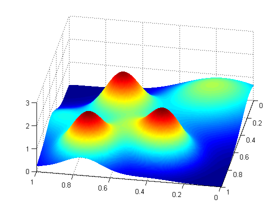
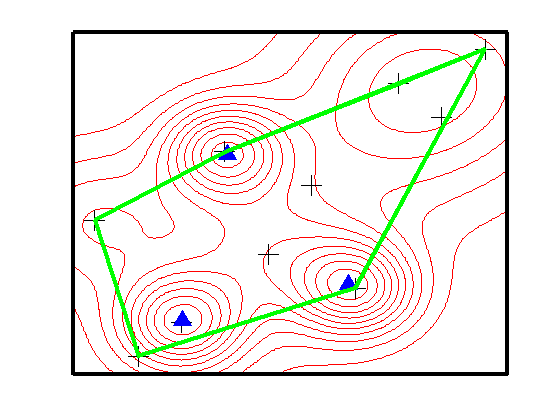

warning('off', 'optim:fminunc:SwitchingMethod')
setSeed(39)
mu = [0.05:0.1:0.95;0.05:0.1:0.95];
mu(1,:) = mu(1,randperm(10));
mu(2,:) = mu(2,randperm(10));
mu = mu';
sigma = 0.2*[0.045,0.045,0.045,0.1,0.2,0.25,0.3,0.21,0.15,0.11];
f = @(x)0;
for i=1:10
f = @(x)f(x) + 0.1*gausspdf(x, mu(i,:), sigma(i).*eye(2));
end
stepsize = 0.005;
[x1,y1] = meshgrid(0:stepsize:1,0:stepsize:1);
[nrows,ncols] = size(x1);
xx = x1(:); yy = y1(:);
z = f([xx,yy]);
z = reshape(z,nrows,ncols);
figure;
surf(x1, y1, z);
shading interp
view([-170, 52])
printPmtkFigure('gmmLikelihoodSurf');
figure;
contour(x1,y1,z,'-r'); hold on;
plot(mu(:,1),mu(:,2),'+k','MarkerSize',16);
options = optimset('Display', 'off');
modes = zeros(3,2);
for i=1:3
modes(i,:) = fminunc(@(x)-f(x),mu(i,:),options);
end
plot(modes(:,1),modes(:,2),'^b','MarkerSize',12,'MarkerFaceColor','b');
k = convhull(mu(:,1),mu(:,2));
plot(mu(k,1),mu(k,2),'-g','LineWidth',3);
view([180, 90])
set(gca,'box','on','XTick',[],'YTick',[],'LineWidth',3);
printPmtkFigure('gmmLikelihoodConvexHull');
 